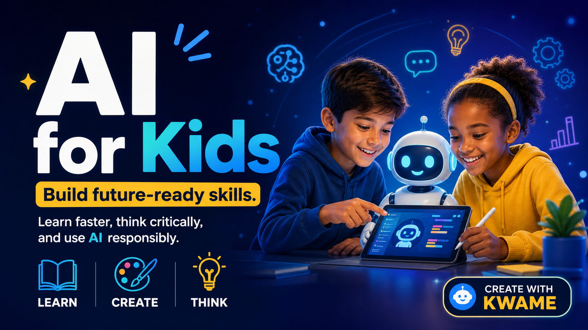

Tool Tutorials
Useful for today's interface, but easy to outgrow when models and features change.
Learn
Practical education for families, students, educators, professionals, and teams. Learn to use AI correctly, responsibly, and with the judgment to adapt as tools change.
Why This Matters
Most AI courses focus on today's tools. Create With Kwame focuses on the foundations: asking better questions, checking outputs, using good judgment, thinking critically, and applying AI responsibly.
Useful for today's interface, but easy to outgrow when models and features change.
Better questions, verification, communication, judgment, and responsible use.
Learning Paths

Help your family understand AI, support learning, and guide children toward responsible use.
Explore Parent Learning ->
Help kids use AI to create, question, learn, and build without relying on it to think for them.
Explore AI for Kids ->Practical AI literacy for educators who want clarity, responsibility, and classroom relevance.
Explore Educator Training ->Use AI to communicate better, save time, improve decisions, and create higher-quality work.
Explore Professional Training ->Practical AI guidance for retirees who want to understand new tools and use them with confidence.
Explore AI for Retirees ->Hands-on sessions for schools, teams, and organizations that need practical AI guidance.
Book a Workshop ->Skills Taught